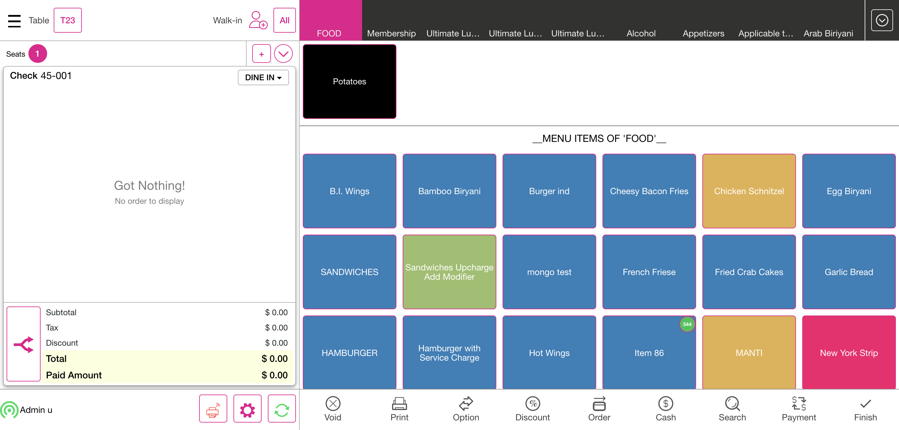

-
Ask Seat Number Feature
2:02:29 pm / 00:16:40:908 Fail
Ask Seat Number Feature
01.23.2024 2:02:29 pm 01.23.2024 2:19:10 pm 00:16:40:908 · #test-id=1FailVerify the transferGiven I'm logged inAnd I closed the order type windowAnd I click AllAnd I click Table Layout tabAnd I select the random table from the table layoutAnd I select Menu of Basic validation for QSR as "Menu"And I click Finish Order buttonAnd I click Table Layout tabAnd User select the Transfer buttonAnd User verify Transfer to Server, Transfer to Table and Transfer Item are displayedAnd User select the Transfer Item OptionWhen I select check for transferredAnd Select the required menu item from the Menu Item TableWhen I select check for transferred1And Click the Done buttonAnd Verify the Successful message of Transfer Item OneAnd I click Done button on the PopupStep skippedWhen I click transferred table after done transfer processStep skippedThen Verify the Transferred menu item is available or not in the receiving tableStep skippedAnd Click the finish buttonStep skippedAnd I click power button in the All Orders screenStep skippedcom.qa.stepdef.Hooks.quit(io.cucumber.java.Scenario)screenshotFailVerify the mergeGiven I'm logged inAnd I closed the order type windowAnd I click AllAnd I click Table Layout tabAnd I select Menu for DineIn as "North Indian dish" for split seat order screen for mergeAnd I get the seat number from the checkAnd I get the list of the menu from the order screenAnd I get value the menu values from order screenAnd I click Finish buttonAnd I click Table Layout tabAnd I select Menu for DineIn as "North Indian dish" for split seat order screen1And I get the seat number from the check1And I get the list of the menu from the order screen1And I get value the menu values from order screen1And I click Finish buttonAnd I click Table Layout tabAnd I click Merge buttonWhen I click the check from the table layout for mergedWhen I click the check from the table layout for merged1And I click Done button on the pop-up to complete mergingThen I should see the merged popup after mergeAnd I click Done button on the PopupWhen I click the check from the table layout for mergedThen I Should get back to the Order ScreenAnd I verify check number from the order screenWhen I verify the seat number from the order screenAnd I select seat oneWhen I verify the seat 1 order screen menu with 1st check menuAnd I select seat twoWhen I verify the seat 2 order screen menu with 2nd check menuAnd I click table number on the order screenWhen I verify the menu prize after merge doneAnd I click Cash button for Complete SaleStep skippedAnd I click Exact button on the cash pop-upStep skippedAnd I click Enter Button on the cash pop-upStep skippedAnd I click Table Layout tabStep skippedAnd I click power button in the All Orders screenStep skippedcom.qa.stepdef.Hooks.quit(io.cucumber.java.Scenario)screenshotPassDisable the "Ask Seat count in Table Layout" new toggle in Pos settings under DINE INGiven I'm logged inAnd I closed the order type windowAnd I click the Settings buttonAnd I click the POS settings from ToggleAnd I verify that ask seat count toggle is disabledAnd I click power button in operationFailDisable Ask Customer - Verify the active checksGiven I'm logged inAnd I closed the order type windowAnd I click AllAnd I click Table Layout tabAnd I select random table on the table layoutAnd I select the number of seats as "1"And I tap Continue to finish selecting the number of seatsStep skippedThen I Should get back to the Order ScreenStep skippedWhen I verify the seat count on the order screen as "1"Step skippedAnd I get check numberStep skippedAnd I select category as "FOOD"Step skippedAnd I select menu item as "Chicken Schnitzel"Step skippedAnd I select menu item as "Onion Rings"Step skippedAnd I click Finish Order buttonStep skippedAnd I click Table Layout tabStep skippedAnd I click Check Stats tabStep skippedAnd I click the active check on check statsStep skippedAnd I click open check buttonStep skippedThen I Should get back to the Order ScreenStep skippedWhen I verify the seat count on the order screen as "1"Step skippedAnd I click service type button in order screenStep skippedAnd I select service type as qsrStep skippedAnd I should see service type as "QSR"Step skippedAnd I click Payment button in the Order Management ScreenStep skippedAnd I click cash button from the payment method popupStep skippedAnd I click Submit button on the Payment WindowStep skippedAnd I closed the order type windowStep skippedAnd I click AllStep skippedAnd I click Closed tab on the Check statsStep skippedAnd I click the Closed check on check statsStep skippedAnd I verify the closed check service type as "QSR"Step skippedAnd I click power buttonStep skippedcom.qa.stepdef.Hooks.quit(io.cucumber.java.Scenario)screenshotFailVerify the ask Customer name toggle enabled status and ask seat count enabled statusGiven I'm logged inAnd I closed the order type windowAnd I click the Settings buttonAnd I click the POS settings from ToggleAnd I verify that ask seat count toggle is enabledAnd I verify that ask customer for Dine In is enabledAnd I click the Toggle Icon buttonAnd I click POS Icon from ToggleAnd I closed the order type windowAnd I click AllAnd I click Table Layout tabAnd I select random table on the table layoutWhen I should verify the ask seat number on the table layoutAnd I select the number of seats as "1"And I tap Continue to finish selecting the number of seatsAnd I click Add Customer ButtonThen I should see the add customer screen in the windowStep skippedAnd I Click on the Byname OptionStep skippedAnd Enter some name and click on Add Customer buttonStep skippedThen I should see the customer profile windowStep skippedAnd I select searchStep skippedAnd I enter an existing customer's name "Auto ragav"Step skippedAnd I select the customerStep skippedWhen I click the Save buttonStep skippedThen I Should get back to the Order ScreenStep skippedThen I should see customer as "Auto r" added on order screenStep skippedAnd I get check numberStep skippedAnd I select category as "FOOD"Step skippedAnd I select menu item as "Chicken Schnitzel"Step skippedAnd I click Payment button in the Order Management ScreenStep skippedAnd I click cash button from the payment method popupStep skippedAnd I click Submit button on the Payment WindowStep skippedAnd I click Table Layout tabStep skippedAnd I click power button in the All Orders screenStep skippedcom.qa.stepdef.Hooks.quit(io.cucumber.java.Scenario)screenshotPassVerify the QSR typeGiven I'm logged inAnd I closed the order type windowAnd I click service type button in order screenAnd I select service type as qsrAnd I get check numberAnd I select category as "FOOD"And I select menu item as "Chicken Schnitzel"And I click Payment button in the Order Management ScreenAnd I click cash button from the payment method popupAnd I click Submit button on the Payment WindowAnd I closed the order type windowAnd I click AllAnd I click Check Stats tabAnd I click Closed tab on the Check statsAnd I should see closed check in closed check tabAnd I click power button in the All Orders screenFailVerify the To GoGiven I'm logged inAnd I closed the order type windowAnd I click service type button in order screenAnd I select order type as "TOGO"And I click Add Customer ButtonThen I should see the add customer screen in the windowAnd I Click on the Byname OptionAnd Enter some name and click on Add Customer buttonThen I should see the customer profile windowAnd I select searchAnd I enter an existing customer's name "Auto ragav"And I select the customerWhen I click the Save buttonStep skippedThen I Should get back to the Order ScreenStep skippedAnd I should see service type as "TOGO"Step skippedAnd I get check numberStep skippedAnd I select category as "FOOD"Step skippedAnd I select menu item as "Chicken Schnitzel"Step skippedAnd I click Payment button in the Order Management ScreenStep skippedAnd I click cash button from the payment method popupStep skippedAnd I click Submit button on the Payment WindowStep skippedAnd I click phone order tabStep skippedAnd I click Check Stats tabStep skippedAnd I click Closed tab on the Check statsStep skippedAnd I should see closed check in closed check tabStep skippedAnd I click power button in the All Orders screenStep skippedcom.qa.stepdef.Hooks.quit(io.cucumber.java.Scenario)screenshot FailVerify the For hereGiven I'm logged inAnd I closed the order type windowAnd I click service type button in order screenAnd I select order type as "FORHERE"And I click Add Customer ButtonThen I should see the add customer screen in the windowAnd I Click on the Byname OptionAnd Enter some name and click on Add Customer buttonThen I should see the customer profile windowAnd I select searchAnd I enter an existing customer's name "Auto ragav"And I select the customerWhen I click the Save buttonStep skippedThen I Should get back to the Order ScreenStep skippedAnd I should see service type as "FORHERE"Step skippedAnd I get check numberStep skippedAnd I select category as "FOOD"Step skippedAnd I select menu item as "Chicken Schnitzel"Step skippedAnd I click Payment button in the Order Management ScreenStep skippedAnd I click cash button from the payment method popupStep skippedAnd I click Submit button on the Payment WindowStep skippedAnd I click phone order tabStep skippedAnd I click Check Stats tabStep skippedAnd I click Closed tab on the Check statsStep skippedAnd I should see closed check in closed check tabStep skippedAnd I click power button in the All Orders screenStep skippedcom.qa.stepdef.Hooks.quit(io.cucumber.java.Scenario)screenshotFailVerify the DeliveryGiven I'm logged inAnd I closed the order type windowAnd I click service type button in order screenAnd I select the DELIVERY order typeThen I should see the add customer screen in the windowAnd I Click on the Byname OptionAnd Enter some name and click on Add Customer buttonThen I should see the customer profile windowAnd I select searchAnd I enter an existing customer's name "Auto test"And I select the customerWhen I click the Save buttonStep skippedThen I Should get back to the Order ScreenStep skippedAnd I should see service type as "DELIVERY"Step skippedAnd I get check numberStep skippedAnd I select category as "FOOD"Step skippedAnd I select menu item as "Chicken Schnitzel"Step skippedAnd I click Payment button in the Order Management ScreenStep skippedAnd I click cash button from the payment method popupStep skippedAnd I click Submit button on the Payment WindowStep skippedAnd I click Done button on the PopupStep skippedAnd I click Exit to return to Order Management ScreenStep skippedAnd I click Finish Order buttonStep skippedAnd I click phone order tabStep skippedAnd I click the Closed check in new tab windowStep skippedAnd I click active driver as "Auto D"Step skippedThen I should see driver is offline popupStep skippedAnd I click Yes button on driver is offline popupStep skippedAnd I click active driver as "Auto D" in the Phone Order ScreenStep skippedAnd I click departure buttonStep skippedAnd I click out tab in phone order screenStep skippedAnd I click the Closed check in out tabStep skippedAnd I click Arrival button in phone order screenStep skippedAnd I click Complete tabStep skippedAnd I click out tab in phone order screenStep skippedAnd I click Complete tabStep skippedThen I should see closed check in complete tabStep skippedAnd I click Check Stats tabStep skippedAnd I click Closed tab on the Check statsStep skippedAnd I should see closed check in closed check tabStep skippedAnd I click power button in the All Orders screenStep skippedcom.qa.stepdef.Hooks.quit(io.cucumber.java.Scenario)screenshotFailVerify the phone togoGiven I'm logged inAnd I closed the order type windowAnd I click service type button in order screenAnd I select order type as "PHONE TOGO"And I click Add Customer ButtonThen I should see the add customer screen in the windowAnd I Click on the Byname OptionAnd Enter some name and click on Add Customer buttonThen I should see the customer profile windowAnd I select searchAnd I enter an existing customer's name "Auto test"And I select the customerWhen I click the Save buttonStep skippedThen I Should get back to the Order ScreenStep skippedAnd I should see service type as "TOGO"Step skippedAnd I get check numberStep skippedAnd I select category as "FOOD"Step skippedAnd I select menu item as "Chicken Schnitzel"Step skippedAnd I click Payment button in the Order Management ScreenStep skippedAnd I click cash button from the payment method popupStep skippedAnd I click Submit button on the Payment WindowStep skippedAnd I click phone order tabStep skippedAnd I click Check Stats tabStep skippedAnd I click Closed tab on the Check statsStep skippedAnd I should see closed check in closed check tabStep skippedAnd I click power button in the All Orders screenStep skippedcom.qa.stepdef.Hooks.quit(io.cucumber.java.Scenario)screenshotFailVerify the phone deliveryGiven I'm logged inAnd I closed the order type windowAnd I click service type button in order screenAnd I select order type as "PHONE DELIVERY"Then I should see the add customer screen in the windowAnd I Click on the Byname OptionAnd Enter some name and click on Add Customer buttonThen I should see the customer profile windowAnd I select searchAnd I enter an existing customer's name "Auto test"And I select the customerWhen I click the Save buttonStep skippedThen I Should get back to the Order ScreenStep skippedAnd I should see service type as "DELIVERY"Step skippedAnd I get check numberStep skippedAnd I select category as "FOOD"Step skippedAnd I select menu item as "Chicken Schnitzel"Step skippedAnd I click Payment button in the Order Management ScreenStep skippedAnd I click cash button from the payment method popupStep skippedAnd I click Submit button on the Payment WindowStep skippedAnd I click Done button on the PopupStep skippedAnd I click Exit to return to Order Management ScreenStep skippedAnd I click Finish Order buttonStep skippedAnd I click phone order tabStep skippedAnd I click the Closed check in new tab windowStep skippedAnd I click active driver as "Auto D"Step skippedThen I should see driver is offline popupStep skippedAnd I click Yes button on driver is offline popupStep skippedAnd I click active driver as "Auto D" in the Phone Order ScreenStep skippedAnd I click departure buttonStep skippedAnd I click out tab in phone order screenStep skippedAnd I click the Closed check in out tabStep skippedAnd I click Arrival button in phone order screenStep skippedAnd I click Complete tabStep skippedAnd I click out tab in phone order screenStep skippedAnd I click Complete tabStep skippedThen I should see closed check in complete tabStep skippedAnd I click Check Stats tabStep skippedAnd I click Closed tab on the Check statsStep skippedAnd I should see closed check in closed check tabStep skippedAnd I click power button in the All Orders screenStep skippedcom.qa.stepdef.Hooks.quit(io.cucumber.java.Scenario)screenshot
FailVerify the For hereGiven I'm logged inAnd I closed the order type windowAnd I click service type button in order screenAnd I select order type as "FORHERE"And I click Add Customer ButtonThen I should see the add customer screen in the windowAnd I Click on the Byname OptionAnd Enter some name and click on Add Customer buttonThen I should see the customer profile windowAnd I select searchAnd I enter an existing customer's name "Auto ragav"And I select the customerWhen I click the Save buttonStep skippedThen I Should get back to the Order ScreenStep skippedAnd I should see service type as "FORHERE"Step skippedAnd I get check numberStep skippedAnd I select category as "FOOD"Step skippedAnd I select menu item as "Chicken Schnitzel"Step skippedAnd I click Payment button in the Order Management ScreenStep skippedAnd I click cash button from the payment method popupStep skippedAnd I click Submit button on the Payment WindowStep skippedAnd I click phone order tabStep skippedAnd I click Check Stats tabStep skippedAnd I click Closed tab on the Check statsStep skippedAnd I should see closed check in closed check tabStep skippedAnd I click power button in the All Orders screenStep skippedcom.qa.stepdef.Hooks.quit(io.cucumber.java.Scenario)screenshotFailVerify the DeliveryGiven I'm logged inAnd I closed the order type windowAnd I click service type button in order screenAnd I select the DELIVERY order typeThen I should see the add customer screen in the windowAnd I Click on the Byname OptionAnd Enter some name and click on Add Customer buttonThen I should see the customer profile windowAnd I select searchAnd I enter an existing customer's name "Auto test"And I select the customerWhen I click the Save buttonStep skippedThen I Should get back to the Order ScreenStep skippedAnd I should see service type as "DELIVERY"Step skippedAnd I get check numberStep skippedAnd I select category as "FOOD"Step skippedAnd I select menu item as "Chicken Schnitzel"Step skippedAnd I click Payment button in the Order Management ScreenStep skippedAnd I click cash button from the payment method popupStep skippedAnd I click Submit button on the Payment WindowStep skippedAnd I click Done button on the PopupStep skippedAnd I click Exit to return to Order Management ScreenStep skippedAnd I click Finish Order buttonStep skippedAnd I click phone order tabStep skippedAnd I click the Closed check in new tab windowStep skippedAnd I click active driver as "Auto D"Step skippedThen I should see driver is offline popupStep skippedAnd I click Yes button on driver is offline popupStep skippedAnd I click active driver as "Auto D" in the Phone Order ScreenStep skippedAnd I click departure buttonStep skippedAnd I click out tab in phone order screenStep skippedAnd I click the Closed check in out tabStep skippedAnd I click Arrival button in phone order screenStep skippedAnd I click Complete tabStep skippedAnd I click out tab in phone order screenStep skippedAnd I click Complete tabStep skippedThen I should see closed check in complete tabStep skippedAnd I click Check Stats tabStep skippedAnd I click Closed tab on the Check statsStep skippedAnd I should see closed check in closed check tabStep skippedAnd I click power button in the All Orders screenStep skippedcom.qa.stepdef.Hooks.quit(io.cucumber.java.Scenario)screenshotFailVerify the phone togoGiven I'm logged inAnd I closed the order type windowAnd I click service type button in order screenAnd I select order type as "PHONE TOGO"And I click Add Customer ButtonThen I should see the add customer screen in the windowAnd I Click on the Byname OptionAnd Enter some name and click on Add Customer buttonThen I should see the customer profile windowAnd I select searchAnd I enter an existing customer's name "Auto test"And I select the customerWhen I click the Save buttonStep skippedThen I Should get back to the Order ScreenStep skippedAnd I should see service type as "TOGO"Step skippedAnd I get check numberStep skippedAnd I select category as "FOOD"Step skippedAnd I select menu item as "Chicken Schnitzel"Step skippedAnd I click Payment button in the Order Management ScreenStep skippedAnd I click cash button from the payment method popupStep skippedAnd I click Submit button on the Payment WindowStep skippedAnd I click phone order tabStep skippedAnd I click Check Stats tabStep skippedAnd I click Closed tab on the Check statsStep skippedAnd I should see closed check in closed check tabStep skippedAnd I click power button in the All Orders screenStep skippedcom.qa.stepdef.Hooks.quit(io.cucumber.java.Scenario)screenshotFailVerify the phone deliveryGiven I'm logged inAnd I closed the order type windowAnd I click service type button in order screenAnd I select order type as "PHONE DELIVERY"Then I should see the add customer screen in the windowAnd I Click on the Byname OptionAnd Enter some name and click on Add Customer buttonThen I should see the customer profile windowAnd I select searchAnd I enter an existing customer's name "Auto test"And I select the customerWhen I click the Save buttonStep skippedThen I Should get back to the Order ScreenStep skippedAnd I should see service type as "DELIVERY"Step skippedAnd I get check numberStep skippedAnd I select category as "FOOD"Step skippedAnd I select menu item as "Chicken Schnitzel"Step skippedAnd I click Payment button in the Order Management ScreenStep skippedAnd I click cash button from the payment method popupStep skippedAnd I click Submit button on the Payment WindowStep skippedAnd I click Done button on the PopupStep skippedAnd I click Exit to return to Order Management ScreenStep skippedAnd I click Finish Order buttonStep skippedAnd I click phone order tabStep skippedAnd I click the Closed check in new tab windowStep skippedAnd I click active driver as "Auto D"Step skippedThen I should see driver is offline popupStep skippedAnd I click Yes button on driver is offline popupStep skippedAnd I click active driver as "Auto D" in the Phone Order ScreenStep skippedAnd I click departure buttonStep skippedAnd I click out tab in phone order screenStep skippedAnd I click the Closed check in out tabStep skippedAnd I click Arrival button in phone order screenStep skippedAnd I click Complete tabStep skippedAnd I click out tab in phone order screenStep skippedAnd I click Complete tabStep skippedThen I should see closed check in complete tabStep skippedAnd I click Check Stats tabStep skippedAnd I click Closed tab on the Check statsStep skippedAnd I should see closed check in closed check tabStep skippedAnd I click power button in the All Orders screenStep skippedcom.qa.stepdef.Hooks.quit(io.cucumber.java.Scenario)screenshot
-
org.openqa.selenium.NoSuchElementException
3 tests
org.openqa.selenium.NoSuchElementException
3 failedStatus Timestamp TestName Fail 14:04:22 pm And Verify the Successful message of Transfer Item One Ask Seat Number Feature.Verify the transfer.And Verify the Successful message of Transfer Item OneFail 14:09:07 pm When I verify the menu prize after merge done Ask Seat Number Feature.Verify the merge.When I verify the menu prize after merge doneFail 14:10:34 pm And I select the number of seats as "1" Ask Seat Number Feature.Disable Ask Customer - Verify the active checks.And I select the number of seats as "1" -
org.openqa.selenium.ElementClickInterceptedException
1 tests
org.openqa.selenium.ElementClickInterceptedException
1 failedStatus Timestamp TestName Fail 14:11:57 pm And I click Add Customer Button Ask Seat Number Feature.Verify the ask Customer name toggle enabled status and ask seat count enabled status.And I click Add Customer Button -
org.openqa.selenium.InvalidSelectorException
5 tests
org.openqa.selenium.InvalidSelectorException
5 failedStatus Timestamp TestName Fail 14:13:44 pm And I select the customer Ask Seat Number Feature.Verify the To Go.And I select the customerFail 14:15:03 pm And I select the customer Ask Seat Number Feature.Verify the For here.And I select the customerFail 14:16:23 pm And I select the customer Ask Seat Number Feature.Verify the Delivery.And I select the customerFail 14:17:43 pm And I select the customer Ask Seat Number Feature.Verify the phone togo.And I select the customerFail 14:19:10 pm And I select the customer Ask Seat Number Feature.Verify the phone delivery.And I select the customer
-
@AskSeatCount018
11 tests
@AskSeatCount018
2 passed 9 failedStatus Timestamp TestName Fail 14:02:29 pm Verify the transfer Ask Seat Number Feature.Verify the transferFail 14:04:30 pm Verify the merge Ask Seat Number Feature.Verify the mergePass 14:09:12 pm Disable the "Ask Seat count in Table Layout" new toggle in Pos settings under DINE IN Ask Seat Number Feature.Disable the "Ask Seat count in Table Layout" new toggle in Pos settings under DINE INFail 14:10:28 pm Disable Ask Customer - Verify the active checks Ask Seat Number Feature.Disable Ask Customer - Verify the active checksFail 14:10:39 pm Verify the ask Customer name toggle enabled status and ask seat count enabled status Ask Seat Number Feature.Verify the ask Customer name toggle enabled status and ask seat count enabled statusPass 14:11:58 pm Verify the QSR type Ask Seat Number Feature.Verify the QSR typeFail 14:13:32 pm Verify the To Go Ask Seat Number Feature.Verify the To GoFail 14:13:44 pm Verify the For here Ask Seat Number Feature.Verify the For hereFail 14:15:04 pm Verify the Delivery Ask Seat Number Feature.Verify the DeliveryFail 14:16:23 pm Verify the phone togo Ask Seat Number Feature.Verify the phone togoFail 14:17:44 pm Verify the phone delivery Ask Seat Number Feature.Verify the phone delivery
Started
Jan 23, 2024 02:02:29 pm
Ended
Jan 23, 2024 02:19:10 pm
Features Passed
0
Features Failed
1
Features
Scenarios
Steps
Timeline
Tags
| Name | Passed | Failed | Skipped | Others | Passed % |
|---|---|---|---|---|---|
| @AskSeatCount018 | 2 | 9 | 0 | 0 | 18.182% |